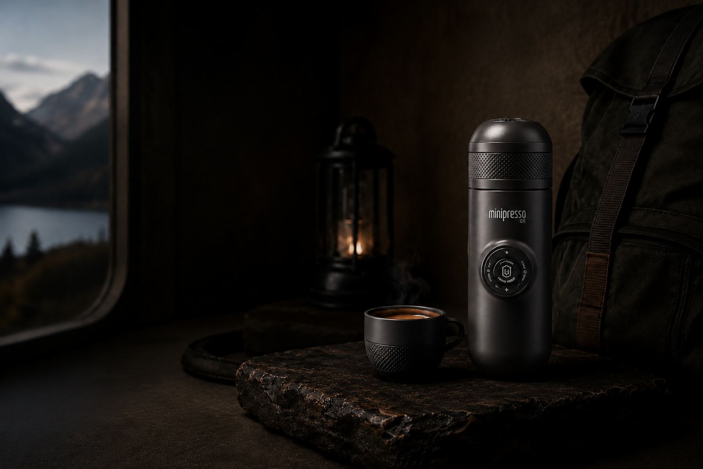
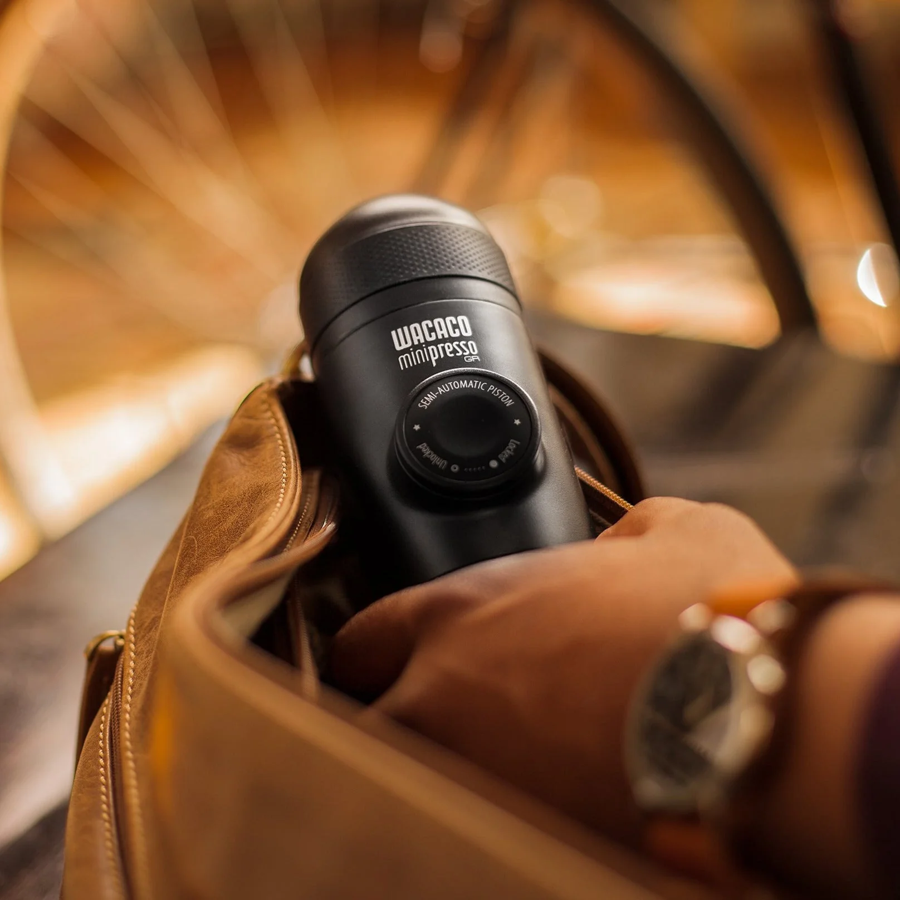
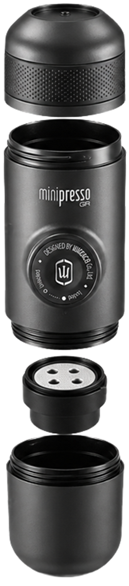

El espresso
que va a donde vos vas.
La cafetera portátil más compacta y versátil del mundo. Disfrutá de un espresso perfecto con crema densa en cualquier lugar, sin cables ni baterías.
Simplicidad absoluta.
Sin cables
Sin consumibles
Sin restricciones
Control total
Minipresso GR
en números.

Ingeniería desglosada.
Conoce cada componente de tu Minipresso

Selecciona un componente
Toca los números para ver la información de cada pieza.
"Menos elementos, más control.— El Equipo de Diseño Wacaco
Diseñada para durar y funcionar en cualquier coordenada."
Todo lo que necesitas, nada más.
Sin electricidad
Funciona de forma 100% manual. Olvídate de cables y baterías; prepara tu café en cualquier lugar.
Todo en uno
Componentes integrados: el protector sirve de taza y la tapa guarda la cuchara dosificadora.
Ultra liviana
Con solo 360 g de peso, es la compañera ideal para caminatas, viajes o la oficina.


El espresso
del amanecer
Despierta en la cumbre con el aroma a espresso fresco. Su sistema mecánico trabaja igual de bien a 4.000 metros de altura que al nivel del mar.

Sin límites
de equipaje
Una cafetera que no exige espacio. Llévala en cualquier compartimento externo y prepárate para disfrutar tu variedad favorita estés donde estés.

Autonomía
en tus manos
Olvídate de buscar enchufes o baterías de repuesto. La Minipresso GR te da independencia absoluta para tu ritual diario.

Tu pausa,
tu elección
De la oficina al campamento base. Agua caliente, café molido y un par de bombeos son suficientes para obtener la taza ideal en cualquier momento.
Completa tu ritual.
Accesorios originales diseñados para expandir
las capacidades de tu Minipresso GR.

Minipresso Case
Ver másMinipresso Case
Funda rígida de EVA premium con interior de tela suave. Protege tu cafetera de golpes, polvo y rayaduras en tus viajes.
Ajuste perfecto · Mosquetón incluido
Minipresso Tank+
Ver másMinipresso Tank+
Depósito de agua ampliado de 120 ml que reemplaza al estándar. Prepara espressos dobles o cafés largos sobre la marcha.
Capacidad 120ml · Vaso integrado
Barista Kit
Ver másBarista Kit
El set definitivo. Incluye depósitos grandes, filtros para café doble (16g), un compactador y adaptadores integrados.
Espresso doble · Portátil · TamperPreguntas frecuentes
Todo lo que necesitas saber antes de llevarla a la montaña.
Es 100% mecánica y no calienta agua. Lleva agua caliente en un termo o caliéntala antes de llenar el depósito.
Molienda fina de espresso. Una molienda gruesa no generará la presión necesaria para lograr una crema densa.
No. Su diseño modular permite desmontar y enjuagar todas las piezas bajo la canilla en segundos.
Sí. Al ser manual y no requerir gas comprimido, funciona sin pérdida de rendimiento a cualquier altitud.